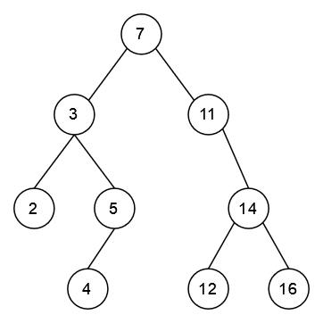
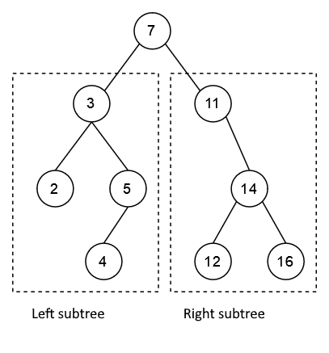
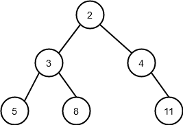

After this section
- You will be familiar with binary trees and some recursive algorithms used to process them
The real advantages of recursion become evident when we come across problems where iterative solutions are difficult to write. Let’s take a look at binary trees, for instance. A binary tree is a branched structure where we have nodes, and at each node the structure branches, at most, into two child branches with nodes of their own. A binary tree could then look like this (computer science is often considered a branch of the natural sciences, but our understanding of trees is a little topsy-turvy, as you’ll notice):

Binary trees should at least theoretically be easy to handle recursively: if we want to perform some operation on every node in the tree, our algorithm simply needs to
- Process the current node
- Call itself on the child node on the left
- Call itself on the child node on the right

As you can see from the image above, both the left and right “subtrees” are fully fledged binary trees themselves, and the only node left outside the recursive calls is the parent node, which is processed in step 1, before calling the function recursively. So, we can be sure that when the execution of the function finishes, each node has been visited exactly once.
An iterative version of a binary tree traversal would be much more complicated, as we would have to somehow keep track of all the nodes we have already visited. The same principles are true for all computational tree structures, not just binary ones.
A binary tree is easily modelled in Python code as well. We only need to write a class definition for a single node. It has a value attribute and attributes for the left and right child nodes:
class Node:
""" The class represents a single node in a binary tree """
def __init__(self, value, left_child:'Node' = None, right_child:'Node' = None):
self.value = value
self.left_child = left_child
self.right_child = right_child
Now let’s assume we want to model the following tree:

We could achieve this with the following code:
if __name__ == "__main__":
tree = Node(2)
tree.left_child = Node(3)
tree.left_child.left_child = Node(5)
tree.left_child.right_child = Node(8)
tree.right_child = Node(4)
tree.right_child.right_child = Node(11)
Recursive binary tree algorithms
First, let’s take a look at an algorithm which prints out all the nodes in a binary tree one by one. In these following examples we will be working with the binary tree defined above.
The argument to the printing function is the root node of the binary tree. This is the node at the very top in our illustration above. All other nodes are children to this node:
def print_nodes(root: Node):
print(root.value)
if root.left_child is not None:
print_nodes(root.left_child)
if root.right_child is not None:
print_nodes(root.right_child)
The function prints the value of the node passed as an argument, and then calls itself on the left and right child nodes, assuming the nodes are defined. This is a very simple algorithm, but it efficiently and reliably traverses all nodes in the tree, no matter the size of the tree. Crucially, no node is visited twice. Each value is printed only once.
If we pass the root node tree of the binary tree illustrated above as an argument to the function, it prints out
2
3
5
8
4
11
As you can see from the order of the nodesin the printout, the algorithm first moves down the “left leg” of the tree down to the very bottom, and from there traverses the other nodes in order.
Similarly, we can write an algorithm for calculating the sum of all the values stored in the nodes of the tree:
def sum_of_nodes(root: Node):
node_sum = root.value
if root.left_child is not None:
node_sum += sum_of_nodes(root.left_child)
if root.right_child is not None:
node_sum += sum_of_nodes(root.right_child)
return node_sum
The variable node_sum is initialised to equal the value of the current node. The value in the variable is then augmented by recursive calls to the node sums of the left and right child trees (first making sure they exist, of course). This result is then returned
Please write a function named `greatest_node(root: Node)` which takes the root node of a binary tree as its argument.
The function should return the value of the node with the greatest value within the tree. The tree should be traversed recursively.
Hint: the function `sum_of_nodes` in the example above may come in handy.
An example of how the function should work:
```python
if __name__ == "__main__":
tree = Node(2)
tree.left_child = Node(3)
tree.left_child.left_child = Node(5)
tree.left_child.right_child = Node(8)
tree.right_child = Node(4)
tree.right_child.right_child = Node(11)
print(greatest_node(tree))
```
11
A sorted binary tree
A binary tree is especially useful when the nodes are sorted in a certain way. This makes finding nodes in the tree fast and efficient.
Let’s take a look a tree which is sorted as follows: the left child of each node is smaller than the node itself, and the right child is correspondingly greater.
Now we can write a recursive algorithm for searching for nodes. The idea is very similar to the binary search from the previous section: if the current node is the node we are looking for, return True. Else, continue recursively with either the left or the right child tree. If the node is not defined, return False.
def find_node(root: Node, value):
if root is None:
return False
if value == root.value:
return True
if value > root.value:
return find_node(root.right_child, value)
return find_node(root.left_child, value)
Revisiting the times before recursion
Let’s finish off this part of the material with a slightly larger exercise concentrating on object oriented programming principles. We do not recommend using recursion in this series of tasks, but list comprehension techniques will come in useful.
In this exercise you will write two different classes, which will in turn form the backbone of the programming exercise which follows this one, where you will write an interactive application.
## Task
Please write a class named `Task` which models a single task in a software company's list of tasks. Tasks have
- a description
- an estimate of the hours required for completing the task
- the name of the programmer assigned to the task
- a field for keeping track of whether the task is finished
- a unique identifier
The class is used as follows:
```python
t1 = Task("program hello world", "Eric", 3)
print(t1.id, t1.description, t1.programmer, t1.workload)
print(t1)
print(t1.is_finished())
t1.mark_finished()
print(t1)
print(t1.is_finished())
t2 = Task("program webstore", "Adele", 10)
t3 = Task("program mobile app for workload accounting", "Eric", 25)
print(t2)
print(t3)
```
1 program hello world Eric 3
1: program hello world (3 hours), programmer Eric NOT FINISHED
False
1: program hello world (3 hours), programmer Eric FINISHED
True
2: program webstore (10 hours), programmer Adele NOT FINISHED
3: program mobile app for workload accounting (25 hours), programmer Eric NOT FINISHED
Some clarifications:
- the state of the task (finished or not yet finished) can be checked with the function `is_finished(self)` which returns a Boolean value
- a task is not finished when it is created
- a task is marked as finished by calling the method `mark_finished(self)`
- the id of a task is a running number which starts with 1. The id of the first task is 1, the id of the second is 2, and so forth.
**Hint**: `id` can be implemented as a [class variable](/part-9/5-class-attributes#class-variables).
## OrderBook
Please write a class named `OrderBook` which collects all the tasks ordered from the software company. The tasks should be modelled with the class `Task` you just wrote.
The basic version of an OrderBook is used as follows:
```python
orders = OrderBook()
orders.add_order("program webstore", "Adele", 10)
orders.add_order("program mobile app for workload accounting", "Eric", 25)
orders.add_order("program app for practising mathematics", "Adele", 100)
for order in orders.all_orders():
print(order)
print()
for programmer in orders.programmers():
print(programmer)
```
1: program webstore (10 hours), programmer Adele NOT FINISHED
2: program mobile app for workload accounting (25 hours), programmer Eric NOT FINISHED
3: program app for practising mathematics (100 hours), programmer Adele NOT FINISHED
Adele
Eric
At this stage your `OrderBook` should provide three methods:
- `add_order(self, description, programmer, workload)` which adds a new order to the OrderBook. An OrderBook stores the orders internally as `Task` objects. NB: the method should take exactly the arguments mentioned, or else the automated tests will not work correctly.
- `all_orders(self)` returns a list of all the tasks stored in the OrderBook
- `programmers(self)` returns a list of the names of all the programmers with tasks stored in the OrderBook. The list should contain each programmer only once
**Hint:** an easy method for removing duplicates is handling the list initially as a [set](https://docs.python.org/3.8/library/stdtypes.html#set). A set is a collection of items where each unique item appears only once. A `set` can be then converted back into a list, and we can then be sure each item is now unique:
```python
my_list = [1,1,3,6,4,1,3]
my_list2 = list(set(my_list))
print(my_list)
print(my_list2)
```
[1, 1, 3, 6, 4, 1, 3]
[1, 3, 4, 6]
## Some more features for OrderBook
Please write three more methods in your `OrderBook` class.
The method `mark_finished(self, id: int)` takes the id of the task as its argument and marks the relevant task as finished:
```python
orders = OrderBook()
orders.add_order("program webstore", "Adele", 10)
orders.add_order("program mobile app for workload accounting", "Eric", 25)
orders.add_order("program app for practising mathematics", "Adele", 100)
orders.mark_finished(1)
orders.mark_finished(2)
for order in orders.all_orders():
print(order)
```
1: program webstore (10 hours), programmer Adele FINISHED
2: program mobile app for workload accounting (25 hours), programmer Eric FINISHED
3: program app for practising mathematics (100 hours), programmer Adele NOT FINISHED
If there is no task with the given id, the method should raise a `ValueError` exception. If you need a refresher on raising exceptions, please have a look at [part 6](/part-6/3-errors#raising-exceptions).
The methods `finished_orders(self)` and `unfinished_orders(self)` work as expected: both return a list containing the relevant tasks from the OrderBook.
## Finishing touches to OrderBook
Please write one last method in your `OrderBook` class: `status_of_programmer(self, programmer: str)` which returns a _tuple_. The tuple should contain the number of finished and unfinished tasks the programmer has assigned to them, along with the estimated hours in both categories.
```python
orders = OrderBook()
orders.add_order("program webstore", "Adele", 10)
orders.add_order("program mobile app for workload accounting", "Adele", 25)
orders.add_order("program app for practising mathematics", "Adele", 100)
orders.add_order("program the next facebook", "Eric", 1000)
orders.mark_finished(1)
orders.mark_finished(2)
status = orders.status_of_programmer("Adele")
print(status)
```
(2, 1, 35, 100)
The first item in the tuple is the number of _finished_ tasks, while the second item is the number of _unfinished_ tasks. The third and fourth items are the sums of workload estimates for the finished and unfinished tasks, respectively.
If there is no programmer with the given name, the method should raise a `ValueError` exception.
In this exercise you will create an interactive application for administering the tasks ordered from a software company. The implementation is completely up to you, but you may use the building blocks from the previous exercise in your application. The examples in the [last section of part 10](/part-10/4-application-development) can also prove useful.
## Without error handling
The application should work _exactly_ as follows:
commands:
0 exit
1 add order
2 list finished tasks
3 list unfinished tasks
4 mark task as finished
5 programmers
6 status of programmer
command: **1**
description: **program the next facebook**
programmer and workload estimate: **jonah 1000**
added!
command: **1**
description: **program mobile app for workload accounting**
programmer and workload estimate: **eric 25**
added!
command: **1**
description: **program an app for music theory revision**
programmer and workload estimate: **nina 12**
added!
command: **1**
description: **program the next twitter**
programmer and workload estimate: **jonah 55**
added!
command: **2**
no finished tasks
command: **3**
1: program the next facebook (1000 hours), programmer jonah NOT FINISHED
2: program mobile app for workload accounting (25 hours), programmer eric NOT FINISHED
3: program an app for music theory revision (12 hours), programmer nina NOT FINISHED
4: program the next twitter (55 hours), programmer jonah NOT FINISHED
command: **4**
id: **2**
marked as finished
command: **4**
id: **4**
marked as finished
command: **2**
2: program mobile app for workload accounting (25 hours), programmer eric FINISHED
4: program the next twitter (55 hours), programmer jonah FINISHED
command: **3**
1: program the next facebook (1000 hours), programmer jonah NOT FINISHED
3: program an app for music theory revision (12 hours), programmer nina NOT FINISHED
command: **5**
jonah
eric
nina
command: **6**
programmer: **jonah**
tasks: finished 1 not finished 1, hours: done 55 scheduled 1000
The first exercise point is granted for a working application when all user input is flawless.
## Handling errors in user input
To gain the second exercise point for this exercise your application is expected to recover from erroneus user input. Any input which does not follow the specified format should produce an error message _erroneous input_, and result in yet another repeat of the loop asking for a new command:
command: **1**
description: **program mobile app for workload accounting**
programmer and workload estimate: **eric xxx**
erroneous input
command: **1**
description: **program mobile app for workload accounting**
programmer and workload estimate: **eric**
erroneous input
command: **4**
id: **1000000**
erroneous input
command: **4**
id: **XXXX**
erroneous input
command: **6**
programmer: **unknownprogrammer**
erroneous input
Please respond to a quick questionnaire on this part of the course.